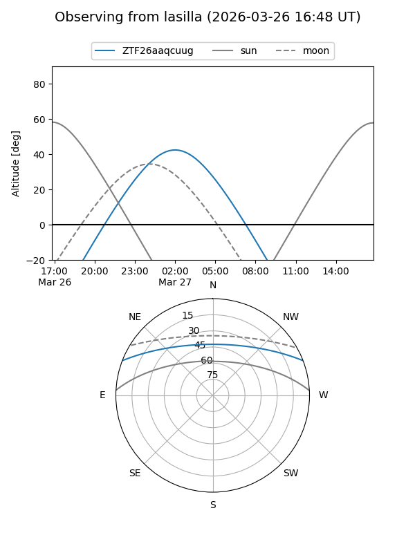
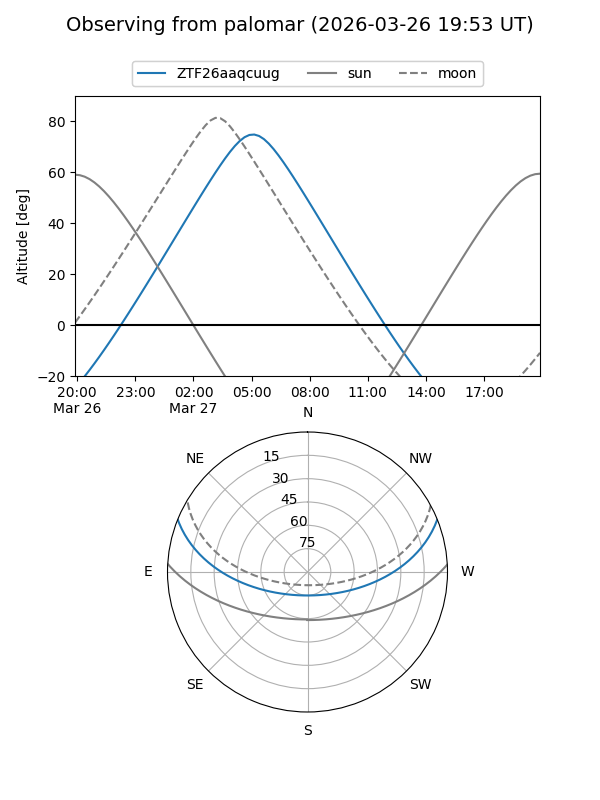

ZTF26aaqcuug
Target ZTF26aaqcuug at 2026-03-27 05:47
Aliases and brokers:
FINK: link
Lasair: link
ALeRCE: link
alt names
ZTF26aaqcuug (ztf,fink_ztf)
Coordinates:
equatorial (ra, dec) = 143.4407,+18.36758
equatorial (HMS+DMS) = 09:33:45.77,+18:22:03.30
galactic (l, b) = (213.0171,+43.88001)
Flags:
Photometry:
last ztfg=17.50
1 ztfg detections
Lightcurve
Visibility


Additional plots